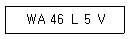
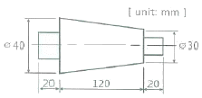
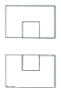
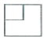
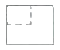
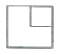
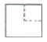
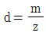
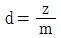
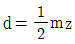

기계가공조립기능사 (2015-07-19 기출문제)
1과목: 기계가공법 및 안전관리
1. 기차 바퀴처럼 길이가 짧고 지름이 큰 공작물 가공에 가장 적당한 선반은?
- 정면선반
- 터릿선반
- 모방선반
- 공구선반
(정답률: 84%)

2. 선반작업에서 사용하는 센터의 종류로 거리가 먼 것은?
- 하프 센터
- 게이지 센터
- 파이프 센터
- 베어링 센터
(정답률: 53%)
3. 주철과 같이 메진 재료를 저속으로 절삭할 때 발생하는 칩의 형태는?
- 균열형 칩
- 전단형 칩
- 열단형 칩
- 유동형 칩
(정답률: 57%)
4. 호닝 작업의 특징에 대한 설명 중 틀린 것은?
- 아름다운 면을 얻을 수 있다.
- 정밀한 치수로 가공할 수 있다.
- 발열이 많이 발생하지만 경제적인 가공이 가능하다.
- 앞선 가공에서 발생한 진직도, 진원도 등의 오차를 수정할 수 있다.
(정답률: 69%)
5. 절삭유 중에서 지방질유에 해당되는 것은?
- 경유
- 스핀들유
- 기계유
- 종자유(seed oil)
(정답률: 71%)
6. 1차로 가공된 가공물의 안지름보다 다소 큰 강철 볼을 압입하여, 통과시켜서 가공물의 표면을 소성변형시키는 가공방법은?
- 블라스팅
- 버니싱
- 버핑
- 텀블링
(정답률: 74%)
7. 밀링가공에서 하향절삭과 상향절삭을 비교할 때, 상향절삭의 설명으로 옳은 것은?
- 가공시 백래시 제거장치가 필요없다.
- 가공면의 표면 거칠기가 좋다.
- 가공물 고정이 유리하다.
- 공구수명이 길다.
(정답률: 78%)
8. 드릴가공의 불량원인이 아닌 것은?
- 가공물의 재질이 균일할 때
- 절삭날의 양쪽 길이가 틀릴 때
- 주축 베어링이 마모되어 있을 때
- 주축이 테이블과 경사져 있을 때
(정답률: 83%)
9. 선반작업에서 널링공구의 형상으로 거리가 먼 것은?
- 둥근 평목형
- 평목형
- 홈 평목형
- 귀목형
(정답률: 62%)
10. 새들 위에 선회대가 있어 테이블을 일정한 각도로 회전시키거나 테이블을 상·하로 경사 시킬 수 있는 밀링머신은?
- 수직 밀링머신
- 수평 밀링머신
- 만능 밀링머신
- 램형 밀링머신
(정답률: 62%)
11. 목재, 피혁, 직물 등 탄성이 있는 재료로 된 바퀴표면에 부착시킨 미세한 연삭입자로서 연삭작용을 하여 공작물 표면을 버핑하기 전에 다듬질하는 방법은?
- 롤러 다듬질
- 폴리싱
- 버니싱 다듬질
- 베럴가공
(정답률: 44%)
12. 기계적 에너지로 진동을 하는 공구와 가공물 사이에 연삭입자와 가공액을 주입하고서 작은 압력으로 공구에 진동을 주어 가공하는 방식은?
- 전해 가공
- 초음파 가공
- 방전 가공
- 전주 가공
(정답률: 61%)
13. 바이트 구조에 따른 분류로 틀린 것은?
- 세라믹 바이트
- 클램프 바이트
- 단체 바이트
- 팁 바이트
(정답률: 54%)
14. 드릴링 머신에서 가공할 수 없는 작업은?
- 보링 가공
- 리머 가공
- 수나사 가공
- 카운터 싱킹 가공
(정답률: 71%)
15. CNC 공작기계의 제어방식 분류에 속하지 않는 것은?
- 개방회로 방식
- 반개방회로 방식
- 폐쇄회로 방식
- 반폐쇄회로 방식
(정답률: 78%)
16. 창성법에 의한 기어 가공방법은?
- 형판에 의한 기어 가공
- 브로치에 의한 기어 가공
- 래크 커터에 의한 기어 가공
- 총형 바이트에 의한 기어 가공
(정답률: 49%)
17. 밀링머신에서 주축의 회전운동을 직선 왕복운동으로 변환시키는 밀링 부속장치는?
- 회전 테이블 장치
- 래크 절삭장치
- 수직축 장치
- 슬로팅 장치
(정답률: 66%)
18. 일반적으로 강의 래핑에 가장 많이 사용되는 랩(lap)은?
- 주강
- 주철
- 아연
- 주석
(정답률: 58%)
19. 브로칭 머신에서 브로치를 움직이는 방식으로 거리가 먼 것은?
- 나사식
- 벨트식
- 기어식
- 유압식
(정답률: 48%)
20. 수직 밀링머신에서 정면커터의 지름이 200mm, 날수가 10개, 한 날 당 이송이 0.2mm일 때 테이블 이송속도는? (단, 이 때의 회전수는 500rpm 이다.)
- 200 mm/min
- 400 mm/min
- 800 mm/min
- 1000 mm/min
(정답률: 47%)
2과목: 기계재료 및 요소
21. 센터, 척 등을 사용하지 않고 가공물 표면을 조정하는 조정숫돌과 지지대를 이용하여 가공물을 연삭하는 기계는?
- 드릴 연삭기
- 바이트 연삭기
- 만능공구 연삭기
- 센터리스 연삭기
(정답률: 75%)
22. 수평식 보링머신에서 구조에 따른 분류에 해당하지 않는 것은?
- 플로우형
- 테이블형
- 플레이너형
- 보링 헤드형
(정답률: 50%)
23. 연삭 균열을 방지하기 위한 방법이 아닌 것은?
- 경합도가 연한 숫돌을 사용한다.
- 연삭액을 충분히 사용한다.
- 연삭 깊이를 크게 한다.
- 이송을 빠르게 한다.
(정답률: 70%)
24. 숫돌의 지름이 350mm, 회전수가 1500rpm 인 원통연삭기에서 연삭숫돌의 원주 속도는?
- 약 1623m/min
- 약 1649m/min
- 약 1673m/min
- 약 1685m/min
(정답률: 60%)
25. 선반가공에서 길이가 짧고, 테이퍼 각이 큰 공작물을 가공하려고 할 때, 가장 적합한 테이퍼 가공방법은?
- 콜릿척에 의한 가공
- 분할대에 의한 가공
- 심압대 편위에 의한 가공
- 복식 공구대에 의한 가공
(정답률: 45%)
26. 다음 연삭숫돌의 표시 방법에서 “46”은 무엇을 의미하는가?

- 결합제
- 조직
- 결합도
- 입도
(정답률: 70%)
27. 기어의 이의 모양과 같이 공작물의 형상과 동일한 윤곽을 가진 밀링커터는?
- 평면 밀링커터
- 측면 밀링커터
- 메탈 슬리팅 소
- 총형 밀링커터
(정답률: 55%)
28. 일반적인 드릴의 표준 날끝각은?
- 118°
- 108°
- 90°
- 45°
(정답률: 76%)
29. 선반에서 리브(rib)가 있는 상자형의 주물로서 주축대, 심압대, 왕복대를 지지하며 왕복대, 심압대의 안내 작용을 하는 것은?
- 베드
- 돌림판
- 에이프런
- 공구대
(정답률: 64%)
30. 선반의 길이방향 이송 핸들에서 리드 스크루의 리드는 4mm이고 이에 연결된 핸들의 눈금이 100등분 되었을 때, 눈금이 25칸 움직였다면 왕복대의 이동량은 몇 mm인가?
- 0.025
- 0.04
- 0.2
- 1
(정답률: 53%)
31. 방전 가공할 때 전극재로 사용하지 않는 것은?
- 세라믹
- 흑연
- 구리
- 황동
(정답률: 58%)
32. 연삭숫돌 구성의 3요소에 속하지 않는 것은?
- 입자
- 결합도
- 기공
- 결합제
(정답률: 63%)
33. 평면의 줄 다듬질 방법 중 틀린 것은?
- 직진법
- 중진법
- 사진법
- 병진법
(정답률: 76%)
34. 다음 그림과 같은 공작물을 심압대를 편위시켜 절삭하려 한다면, 심압대의 편위량은 약 몇 mm로 하여야 하는가?

- 7.5
- 6.7
- 11.3
- 8.5
(정답률: 52%)
35. 화학적 가공의 특징이 아닌 것은?
- 가공경화 또는 표면변질 층이 발생하지 않는다.
- 강도나 경도에 관계없이 사용할 수 있다.
- 변형이나 거스러미가 발생하지 않는다.
- 한 번에 한 가지만 가공할 수 있다.
(정답률: 64%)
36. 마우러 조직도에 대한 설명으로 옳은 것은?
- 탄소와 규소량에 따른 주철의 조직 관계를 표시한 것
- 탄소와 흑연량에 따른 주철의 조직 관계를 표시한 것
- 규소와 망간량에 따른 주철의 조직 관계를 표시한 것
- 규소와 Fe3C량에 따른 주철의 조직 관계를 표시한 것
(정답률: 53%)
37. 베어링으로 사용되는 구리계 합금으로 거리가 먼 것은?
- 켈밋(kelmet)
- 연청동(lead bronze)
- 문쯔 메탈(muntz metal)
- 알루미늄 청동(Al bronze)
(정답률: 54%)
38. 고속도 공구강 강재의 표준형으로 널리 사용되고 있는 18-4-1형에서 텅스텐 함유량은?
- 1%
- 4%
- 18%
- 23%
(정답률: 69%)
39. 다음 중 알루미늄 합금이 아닌 것은?
- Y합금
- 실루민
- 톰백(tombac)
- 로엑스(Lo-Ex) 합금
(정답률: 61%)
40. 탄소 공구강의 구비 조건으로 거리가 먼 것은?
- 내마모성이 클 것
- 저온에서의 경도가 클 것
- 가공 및 열처리성이 양호할 것
- 강인성 및 내충격성이 우수할 것
(정답률: 68%)
3과목: 기계제도(절삭부분)
41. 공구용으로 사용되는 비금속 재료로 초내열성 재료, 내마멸성 및 내열성이 높은 세라믹과 강한 금속의 분말을 배열 소결하여 만든 것은?
- 다이아몬드
- 고속도강
- 서멧
- 석영
(정답률: 62%)
42. 열처리의 방법 중 강을 경화시킬 목적으로 실시하는 열처리는?
- 담금질
- 뜨임
- 불림
- 풀림
(정답률: 76%)
43. 표점거리 110mm, 지름 20mm의 인장시편에 최대하중 50kN이 작용하여 늘어난 길이 △ℓ=22mm일 때, 연신율은?
- 10%
- 15%
- 20%
- 25%
(정답률: 48%)
44. 볼트 너트의 풀림 방지 방법 중 틀린 것은?
- 로크 너트에 의한 방법
- 스프링 와셔에 의한 방법
- 플라스틱 플러그에 의한 방법
- 아이 볼트에 의한 방법
(정답률: 52%)
45. 피치 4mm인 3줄 나사를 1회전 시켰을 때의 리드는 얼마인가?
- 6mm
- 12mm
- 16mm
- 18mm
(정답률: 85%)
46. 벨트전동에 관한 설명으로 틀린 것은?
- 벨트풀리에 벨트를 감는 방식으로 크로스벨트 방식과 오픈벨트 방식이 있다.
- 오픈벨트 방식에서는 양 벨트 풀리가 반대 방향으로 회전한다.
- 벨트가 원동차에 들어가는 측을 인(긴)장측이라 한다.
- 벨트가 원동차로부터 풀려 나오는 측을 이완측이라 한다.
(정답률: 60%)
47. 기어에서 이(tooth)의 간섭을 막는 방법으로 틀린 것은?
- 이의 높이를 높인다.
- 압력각을 증가시킨다.
- 치형의 이끝면을 깎아낸다.
- 피니언의 반경 방향의 이뿌리면을 파낸다.
(정답률: 56%)
48. 축에 키(key)홈을 가공하지 않고 사용하는 것은?
- 묻힘(sunk) 키
- 안장(saddle) 키
- 반달 키
- 스플라인
(정답률: 55%)
49. 전달마력 30kW, 회전수 200rpm인 전동축에서 토크 T는 약 몇 N·m인가?
- 107
- 146
- 1070
- 1430
(정답률: 28%)
50. 원주에 톱니형상의 이가 달려 있으며 폴(pawl)과 결합하여 한쪽 방향으로 간헐적인 회전운동을 주고 역회전을 방지하기 위하여 사용되는 것은?
- 래칫 휠
- 플라이 휠
- 원심 브레이크
- 자동하중 브레이크
(정답률: 50%)
51. 구멍과 축의 기호에서 최대 허용치수가 기준치수와 일치하는 기호는?
- H
- h
- G
- g
(정답률: 50%)
52. KS 나사 표시 방법에서 G 3/4 A로 기입된 기호의 올바른 해독은?
- 가스용 암나사로 인치 단위이다.
- 가스용 수나사로 인치 단위이다.
- 관용 평행 수나사로 등급이 A 급이다.
- 관용 테이퍼 암나사로 등급이 A 급이다.
(정답률: 55%)
53. 보기 도면은 제 3각 정투상도로 그려진 정면도와 평면도이다. 우측면도로 가장 적합한 것은?





(정답률: 75%)
54. 기하공차 기호에서 자세공차를 나타내는 것은?
- ―
- ○
- ⦾
- ∠
(정답률: 65%)
55. 도면의 표현 방법 중에서 스머징(smudging)을 하는 이유는 어떤 경우인가?
- 물체의 표면이 거친 경우
- 물체의 단면을 나타내는 경우
- 물체의 표면을 열처리하고자 하는 경우
- 물체의 특정부위를 비파괴 검사하고자 하는 경우
(정답률: 62%)
56. 스프링의 제도에 관한 설명으로 틀린 것은?
- 코일 스프링의 종류와 모양만을 간략도로 나타내는 경우에는 재료의 중심선만을 굵은 실선으로 도시한다.
- 코일 부분의 양끝을 제외한 동일 모양 부분의 일부를 생략할 때는 생략한 부분의 선지름의 중심선을 굵은 2점 쇄선으로 도시한다.
- 코일 스프링은 일반적으로 무하중인 상태로 그리고 겹판스프링은 일반적으로 스프링 판이 수평인상태에서 그린다.
- 그림 안에 기입하기 힘든 사항은 요목표에 표시한다.
(정답률: 55%)
57. 기어의 제도에서 모듈(m)과 잇수(z)를 알고 있을 때, 피치원의 지름(d)을 구하는 식은?



- d=mz
(정답률: 68%)
58. KS의 부문별 기호로 옳은 것은?
- KS A - 기계
- KS B - 전기
- KS C - 토건
- KS D - 금속
(정답률: 65%)
59. 줄무늬 방향 기호 중에서 가공에 의한 커터의 줄무늬가 기호를 기입한 면의 중심에 대하여 대략 동심원 모양일 때 기입하는 기호는?
- =
- X
- M
- C
(정답률: 75%)
60. 제도에 있어서 치수 기입 요소로 틀린 것은?
- 치수선
- 치수 숫자
- 가공 기호
- 치수 보조선
(정답률: 66%)